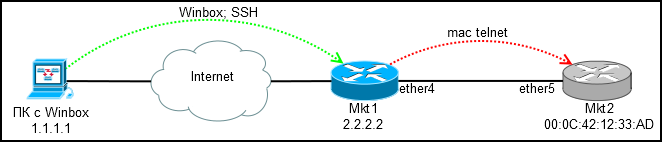
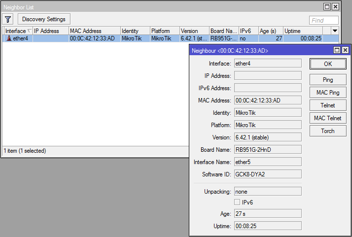
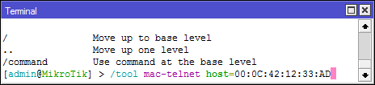
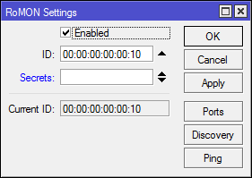
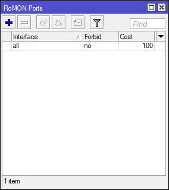
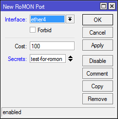
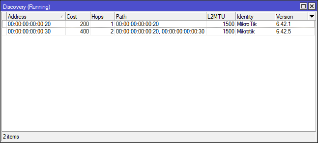
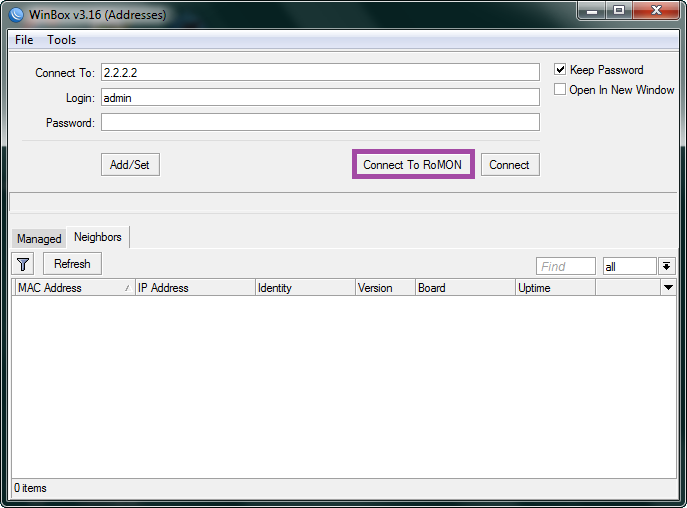
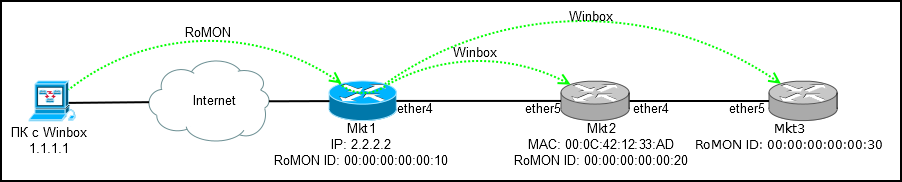
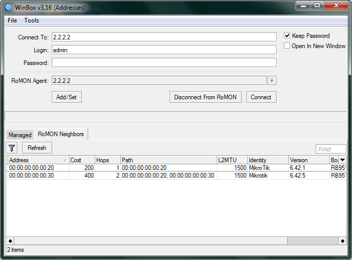

ВНИМАНИЕ!!! пароль на "клиентах" должен указываться для порта, не для ромон в целом. Иначе не видит подключения.
Гайд по Mikrotik RoMON
У всех бывали ситуации, когда необходимо настроить удаленное оборудование(иногда новое), а доступ имеется только к другим сетевым девайсам, никаких ПК/Ноутбуков и пользователей с телефонами. В случае с Mikrotik эту проблему можно решить двумя путями: встроенный в RouterOS mac-telnet и RoMON. О них и пойдет речь ниже.
Mac Telnet с роутера
Для тех кто забыл: Mac telnet работает на Layer2, поэтому подключение возможно в пределах одного сегмента сети.

Подключаемся по winbox или ssh к настроенному роутеру(Mkt1) и через него по mac-telnet к новому(Mkt2).
Где найти mac-telnet:
* [IP]->[Neighbors] — если включено обнаружение соседей
* [IP]->[ARP] — если на новом роутере есть какой-то ip и он резолвится в mac
* [Tools]->[Telnet] — тут помимо mac-telnet есть обычный telnet и ssh
* /tool mac-telnet — из консоли


Что стоит помнить: если на устройстве присутствует дефолтная конфигураци, то mac-telnet будет доступен только на lan портах(все кроме ether1, обычно), так что явно говорите монтажникам куда подключать кабель, иначе никакой mac-telnet и RoMON вам не поможет.
Доступ есть, можно настраивать, но ведь хочется удобства? Особенно при настройке деревьев очередей и большого числа правил фаервола.
Подключение через RoMON
RoMON(Router Management Overlay Network) — Возможность использовать одно устройство mikrotik к которому есть доступ по ip в качестве транзита для подключения к устройству по mac.
RoMON отключен по умолчанию. Клиентская часть встроена в winbox, так что ничего доустанавливать не потребуется.
Настройка на транзитном роутере (Mkt1):
[Tools]->[RoMON]
* Enabled — Включение RoMON
* ID — Ручная установка RoMON ID, по умолчанию выбирается один из mac адресов роутера
* Secrets — Набор паролей для аутентификации по RoMON, используются, если явно не указан пароль на порту. На wiki подробна расписана процедура выбора пароля.
[Tools]->[RoMON]->[Ports]
По дефолту включены ВСЕ порты, что не особо безопасно и отключить all не представляется возможным, так что устанавливаем у него Forbid=yes, более точные правила для интерфейсов перекроют all.
Создаем правило для ether4:
* Interface — порт для которого производим натсройки
* Forbid — запретить работу RoMON на интерфейсе
* Cost — учитывается при построении пути в больших герляндах
* Secrets — Набор паролей для аутентификации
  
Консольный вариант:
/tool romon
set enabled=yes id=00:00:00:00:00:10
/tool romon port
set [ find default=yes ] forbid=yes
add disabled=no interface=ether4 secrets=test-for-romon
Настройка на удаленном роутере (Mkt2):
Тут у нас подключение по mac-telnet, так что и настройки будут консольными:
/tool romon
set enabled=yes id=00:00:00:00:00:20
/tool romon port
set [ find default=yes ] forbid=yes
add disabled=no interface=ether5 secrets=test-for-romon
Теперь в [Tools]->[RoMON]->[Discovery] на Mkt1 мы видим соседа:

И еще одного соседа, который подключен транзитом через Mkt2, оставляю настройку этого соединения в качестве самостоятельного задания, все аналогично.
Подключение
Запускаем Winbox и коннектимся к 2.2.2.2 в режиме RoMON используя обычную учетную запись и пароль, secrets в RoMON относится только к связи между роутерами:

И тут мы видим самое интересное — все роутеры в цепочке RoMON доступны для подключения через единственный транзитный Mikrotik.

Выбираем один из адресов(RoMON ID) и подключаемся к интересующему роутеру.

Итог: Получаем прозрачный доступ до всех роутеров в цепочке, без необходимости последовательного логина через mac-telnet.
Дополнительно
[Tools]->[RoMON]->[Ping] — утилита для пинга роутеров по RoMON ID.
Обычный mac-telnet не является безопасным каналом связи, при наличии RoMON можно устанавливать ssh подключение по RoMON ID.
/tool romon ssh <romon id>
Подключение через RoMON в режиме коммандной строки(для ярлыков):
winbox.exe --romon <RouterIP> <RoMON ID> <user> <password>
На этом все. Функционал не для повседневного использования, но полезно о нем помнить и знать как настроить.